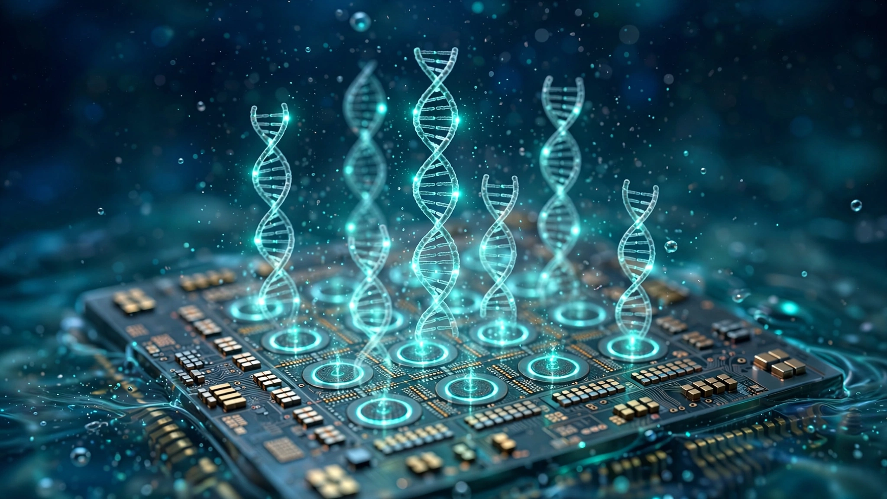

A Chip Designed for Brain Surgery Just Wrote 64 DNA Sequences in a Water Droplet
Harvard researchers took a CMOS chip built to record neurons inside living brains and repurposed it to synthesize 64 distinct DNA sequences simultaneously using nothing but enzymes and water. The $6.4 billion DNA synthesis industry relies on toxic organic solvents to do the same thing. This chip does it in a droplet.

Sixty-four. That is how many distinct DNA sequences a team led by Donhee Ham at Harvard SEAS just synthesized in parallel on a single chip, each up to 39 nucleotides long, using enzymatic chemistry in water at room-compatible temperatures. The paper appeared in Nature Electronics on June 17, 2026. The paper reports that prior enzymatic approaches topped out at roughly a dozen parallel sequences, making this a 5x jump, and the way they did it matters considerably more than the number.
They did not build a new chip for this. They repurposed one that already existed, designed for an entirely different organ. Brains, not genomes.
The chip at the center of this paper is a 4,096-amplifier CMOS nanoelectrode array originally designed for something entirely unrelated: recording electrical signals from neurons inside living tissue. It was built for intracellular brain recordings, the kind of precision neuroscience where you need thousands of electrodes packed into a few square millimeters to listen to individual cells fire. Ham's lab realized the same concentric ring electrodes that could sense millivolt neuronal spikes could also generate localized pH gradients in a liquid, and that those pH gradients could control exactly when and where an enzyme adds a nucleotide to a growing DNA strand.
How a Brain Chip Writes DNA
Standard DNA synthesis today uses phosphoramidite chemistry, a process invented in the 1980s that builds sequences one base at a time using organic solvents like acetonitrile, dichloromethane, and trichloroacetic acid. These chemicals are toxic, require specialized waste handling, and make the entire process incompatible with biological environments, yet phosphoramidite works well enough that Twist Bioscience has scaled it to roughly one million parallel synthesis sites on a silicon chip. It works. But it is fundamentally a chemical process that demands controlled atmospheres, anhydrous conditions, and hazardous materials at every step.
Enzymatic synthesis replaces all of that with biology: a modified terminal deoxynucleotidyl transferase (TdT) enzyme adds nucleotides to DNA strands in water, the same way your immune system generates antibody diversity. The nucleotides carry a reversible blocking group that prevents more than one addition per cycle, and to advance the strand by one base, you need to remove that blocking group. In most enzymatic synthesis platforms, deprotection is triggered chemically across the entire reaction vessel at once, which means every strand advances together and you cannot write different sequences at different locations.
Ham's team solved this with electricity: each concentric ring electrode on the chip generates a localized electrochemical reaction that lowers the pH in a tiny zone directly above it. The low pH triggers deprotection of the blocking group at that specific site and nowhere else. By activating different electrodes in different patterns across synthesis cycles, they independently controlled which sites received which nucleotides, writing 64 unique sequences simultaneously on a chip smaller than a fingernail.
The result is parallel, addressable, enzymatic DNA synthesis, performed in water on a standard CMOS chip with no organic solvents anywhere in the process.
The Numbers That Matter
Context makes this clearer. The DNA synthesis market is worth approximately $6.37 billion in 2026 and is projected to reach $27 billion by 2035, growing at 17.4% annually. The enzymatic synthesis sub-market alone is valued at $3.77 billion and growing at 23.3% CAGR. Companies like DNA Script (which collaborated on this paper), Ansa Biotechnologies (which raised $54.4 million in Series B funding), and Evonetix are all racing to make enzymatic synthesis commercially competitive.
Here is the gap they need to close, and it is enormous. Twist Bioscience, the market leader in high-throughput synthesis, operates silicon chips with approximately one million synthesis sites using phosphoramidite chemistry. Harvard just demonstrated 64 sites, a 15,625x throughput deficit. Twist routinely synthesizes oligos of 200 or more bases, while Harvard demonstrated 39 nucleotides, putting the length gap at 5x or more. Twist charges roughly $0.07 to $0.09 per base for synthetic genes, and whether enzymatic synthesis on CMOS can match that price at far lower throughput remains an open question that no one in the field has answered yet.
| Platform | Chemistry | Parallel Sites | Max Length (nt) | Solvent |
|---|---|---|---|---|
| Twist Bioscience | Phosphoramidite | ~1,000,000 | 200+ | Organic (toxic) |
| DNA Script (SYNTAX) | Enzymatic (TdT) | ~12 | 200+ | Water |
| Ansa Biotechnologies | Enzymatic (TdT) | Low | 1,005 | Water |
| Harvard CMOS | Enzymatic (TdT) | 64 | 39 | Water |
But the chip has 4,096 electrodes, and only 64 were used for synthesis. The paper's Extended Data reveals why: when adjacent electrodes were activated simultaneously, the deprotection chemistry intermediates diffused laterally, corrupting neighboring synthesis sites. The bottleneck is not the electronics, which could address all 4,096 sites independently right now. Chemistry is the wall. The byproducts of pH reduction do not stay put, drifting laterally to corrupt neighboring synthesis sites, and until someone solves that diffusion problem, the 4,032 silent electrodes will remain dark.
The Repurposing Insight
There is a deeper story here than a faster DNA synthesizer, because this chip was not designed for genomics at all. It was designed to record from neurons, funded by IARPA and Horizon Europe and Samsung for neuroscience applications. The fact that the same electrode architecture works for DNA synthesis is an accident of physics, and accidents of physics often point to something more general than any single application.
CMOS electrode arrays that can locally control electrochemistry in aqueous solutions are a platform technology, and DNA synthesis is merely the first demonstrated use. Localized drug release could be another, and programmable surface chemistry for biosensors a third. The chip does not care what reaction you trigger with the pH gradient, and it does not care what field you work in. It just makes tiny zones of controlled acidity, independently, on a surface manufactured by the same semiconductor fabs that produce the chip in your phone. TSMC, Samsung, Intel, or GlobalFoundries could make these tomorrow without retooling a single production line.
What This Does Not Prove
Sixty-four sequences of 39 nucleotides each is a laboratory proof of concept, nothing more. Commercial DNA synthesis requires millions of sequences at hundreds of bases, with per-step coupling efficiencies above 99.5%, and this paper does not report coupling efficiency per step, which makes it impossible to assess error rates as sequences get longer. At 39 bases, errors might be tolerable. At 200? Even 99% per-step accuracy yields only 13% of full-length product. At 1,000, zero. Ansa has demonstrated 99.9% per-step accuracy at 1,005 bases, but not on a massively parallel chip, and nobody has demonstrated both high accuracy and high parallelism simultaneously on an enzymatic platform.
The crosstalk problem is real, unsolved, and density-dependent: at 64-site spacing the chemistry stays contained, but at tighter pitch it does not, and the paper is honest about this, showing that activating adjacent pixels produced corrupted sequences. Solving this requires either new deprotection chemistries that produce less diffusive byproducts, engineered barriers between sites, or wider electrode spacing that sacrifices density, and none of these are trivial.
The strongest counterargument against this work's commercial relevance is brutally simple. Scale wins. Twist Bioscience already does massively parallel DNA synthesis on silicon, at a million sites, with decades of optimized chemistry, a $5.3 billion market capitalization, and an established customer base that includes pharmaceutical companies, agricultural biotech firms, and academic labs spanning six continents. They achieved scale by solving manufacturing problems over many years, and Harvard's chip is 15,000x behind on parallelism and 5x behind on length, introducing a new failure mode in the form of electrochemical crosstalk that phosphoramidite chemistry does not have. The incumbents are not standing still, and Twist holds a broad and growing patent portfolio protecting its phosphoramidite platform.
Why It Might Matter Anyway
The case for enzymatic synthesis has never been about beating phosphoramidite on throughput today, because the real argument lives in what happens when the chemistry matures and the advantages compound over the next decade. Water instead of acetonitrile means no solvent waste disposal, room-temperature operation instead of controlled atmosphere chambers means dramatically simpler facilities, biological enzymes instead of synthetic reagents means the synthesis chemistry is renewable and biodegradable, and CMOS compatibility means the manufacturing scales with Moore's Law rather than fighting it.
Run the math on facility costs. Just run it. A phosphoramidite synthesis facility requires hazardous materials handling, ventilation systems rated for organic solvent vapors, chemical waste treatment, and environmental permits that vary by jurisdiction, while a water-based enzymatic facility needs none of that. None. For a company building synthesis capacity in the developing world or in decentralized locations close to end users, the infrastructure savings could matter more than the per-base cost differential.
DNA Script, which collaborated on this paper, is already selling benchtop enzymatic synthesizers (the SYNTAX system) for on-demand oligo production in individual labs, targeting not Twist's high-throughput gene synthesis market but point-of-use synthesis: a researcher who needs 20 custom primers by tomorrow morning, not 10,000 genes shipped from a centralized factory in two weeks.
Actionable Takeaways
If you work in synthetic biology and order custom DNA regularly, track enzymatic synthesis pricing over the next 18 months. DNA Script's SYNTAX system already offers same-day turnaround for short oligos, and as the parallelism and length of enzymatic platforms improve, the price gap with phosphoramidite will narrow and on-demand synthesis will increasingly compete with centralized gene foundries for sequences under 300 bases.
If you invest in genomics companies, understand the distinction between Twist's moat (manufacturing scale, established supply chain, customer lock-in through validated workflows and regulatory familiarity) and the enzymatic upstarts' moat (simpler infrastructure, water-based chemistry, potential CMOS scalability, and the ability to deploy synthesis capacity in settings where organic solvents are impractical or prohibited). The market is large enough for both, but the risk-reward profile is asymmetric: Twist is priced for continued dominance while enzymatic players are priced for potential. Watch for per-step accuracy data from CMOS-based enzymatic platforms as the key metric.
If you are in semiconductor manufacturing, this paper demonstrates that standard CMOS electrode arrays have applications in biotechnology far beyond their original design, and the addressable-electrochemistry platform concept is worth internal evaluation. The chip that records neurons and synthesizes DNA could also control localized electroplating, programmable surface functionalization, or spatially resolved electrochemical sensing.
The Bottom Line
A chip built to listen to brain cells turns out to be able to write DNA. Sixty-four sequences, 39 bases each, in a droplet of water on a surface that any semiconductor fab on Earth can manufacture. The parallelism is 15,000x behind the industry leader, the sequence length is 5x short, and the crosstalk problem limits how densely you can pack the synthesis sites. But the insight that standard CMOS electrodes can independently control enzymatic chemistry at each pixel is genuinely new, and it means that every advance in semiconductor manufacturing density becomes, automatically, an advance in potential DNA synthesis throughput. The chemistry has to catch up. It will, or it won't. If it does, the chip is already waiting.